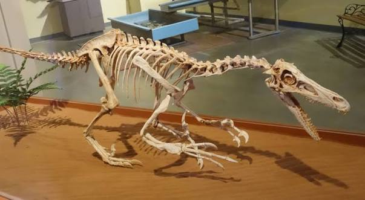
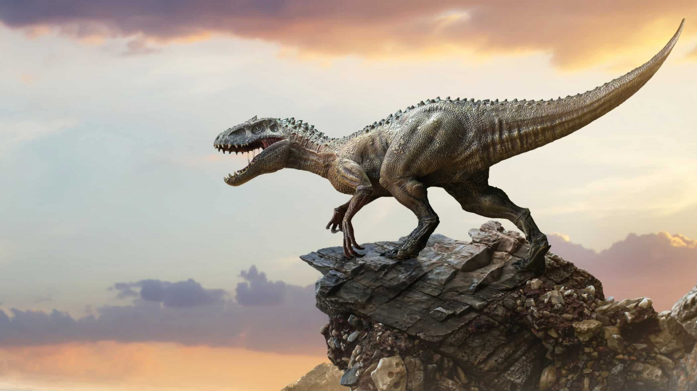

Meu primeiro post
Por: Joice Stoklosa
Boas-vindas ao meu novo blog! Aqui vou compartilhar alguns conhecimntos diversos sobre dinossuros.
Vou compartilhar conhecimentos

Por: Joice Stoklosa
Boas-vindas ao meu novo blog! Aqui vou compartilhar alguns conhecimntos diversos sobre dinossuros.
Por: Joice Stoklosa
O Espinossauro foi o maior dinossauro carnívoro que já existiu, superando até mesmo o famoso Tiranossauro Rex. Ele chegava a medir cerca de 15 metros de comprimento. O mais curioso é que ele passava grande parte do tempo na água e se alimentava principalmente de peixes

Por: Joice Stoklosa
, mas estimativas apontam que mais de 1.500 a 2.000 espécies reais já existiram na Terra. Como novos fósseis aparecem a cada semana, o total exato permanece um mistério em aberto.

Por: Joice Stoklosa
. Muitas espécies extintas tinham penas, corpos coloridos e tamanhos bem variados — alguns eram grandes como o Argentinossauro, mas outros eram pequenos como um pombo.